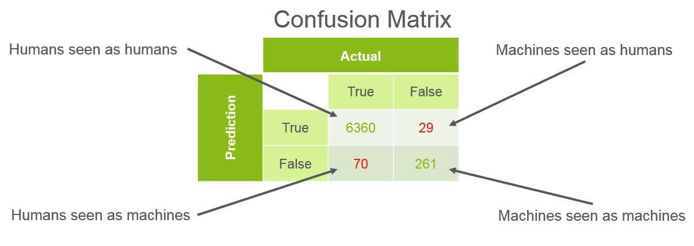

Lately at work we had the opportunity to propose new Uses Cases to develop around Ericsson Expert Analytic and data science in the operator’s network. We propose to work on an automated system to detect machines in the subscriber base.
I know, in a beautiful scenario every operator would have a perfect knowledge of each and every of their subscribers. But the reality is different. Now with the rise of IoT more and more devices require connectivity. LTE and other cellular technologies are perfect because it brings the connectivity and the mobility. But everybody does it their own way. Of course, some people and enterprise, contact an operator to reach an agreement but the vast majority simply figures a way to get it. The only way the operator has to determine what is a machine is by using the machine Type ID but this value has been proven wrong.
The Use Case (UC) we propose will automatically detect which one is a machine and which is in fact a subscriber. To do so, we will use network metadata which is available to the operator. Thus there is no implication on the user side. The core of this metadata is subscriber communication behaviour e.g. data consumption, SMS, cell towers connections, etc. Obviously I will keep the key features for myself 😛

Our dataset had a very unbalance number of machine vs humans, which is expected. Only 5% of the subscribers are machines.
Feature Engineering
Luckily for us we had access to an operator’s data to produce a prototype model. The goal of this model is simply to prove that we can achieve good result in machine detection. To build this model I assumed keys of the model was in the stability over days. My intuition is, machine should be consistent in terms of download, movement, etc. In other words, if a machine is fixed (not moving) it should never move. While a human might move some days and stay home some others.
I did not find efficient way to handle time series in machine learning except deep learning, so I had to engineer my own variation of it by analyzing and categorizing the time series and to express it in terms of features for standard machine learning. To do it we look at all the things that were moving over time and created 2 features average, standard deviation.
So I build a feature set, per subscriber, that describe the best the metadata and their stability over time.
Â
Building Model
To classify machine from the dataset I built a Random Forest.

The Random Forest performed really well. After some tweaking I was able to reach 98.9% accuracy. Here is a quick view of the confusion matrix, showing how the machine learning performed in the highly unbalanced set.

The following proves that we can accurately detect machine using only network related data. After looking at our model, we looked at the key features. Out of the top (most impact on the classifier) five features, four are the Meta features we created to evaluate the stability over the days. In conclusion we can confirm that we have a working prototype and it would be very interesting to implement it with live traffic.
Â
Another Approach
Two of my colleagues tried to answer the same question using different approach. Steven used manual labelling approach. A more statistical technique requiring very low computing resources and Pascal use a recurrent deep learning network, a technique more effective but way heavier on computing.
You can read their experience here: